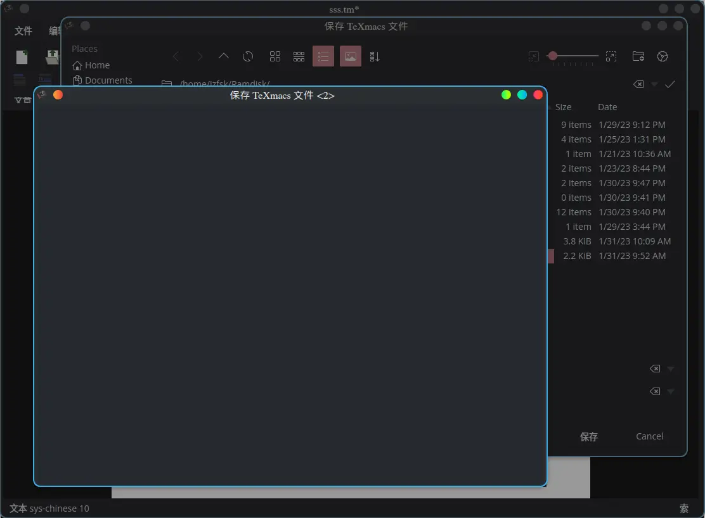
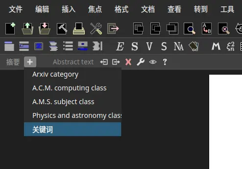
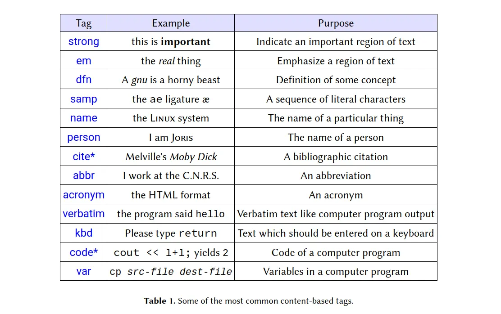
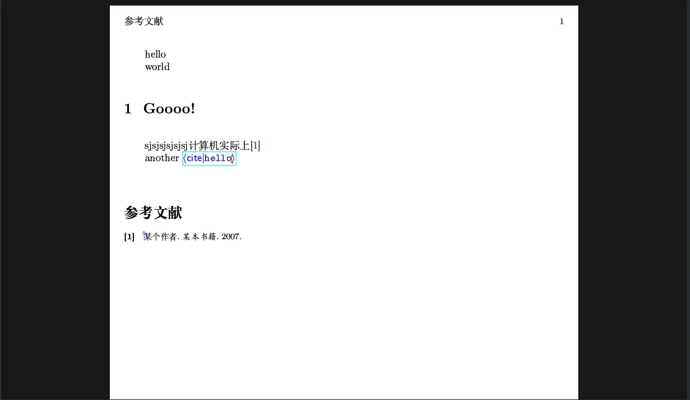
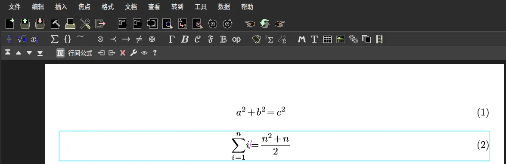

我被 LibreOffice 折磨了五年。
为了替换它，我尝试了 Markdown，但它的功能太简单了，尝试了 LATEX，但是首先我没学会，其次我从来没有成功的让它显示中文字符，并且它的大小也太夸张了。最后我找到了 GNU TeXmacs。我以前也不是没有听说过，但是受到它的名字的误导，我认为它是一个「使用 Emacs 的 TeX 编辑器」。其实它和两者的关系不大。
openSUSE 的软件源里面没有，需要下载 rpm 包安装。
在使用 TeXmacs 之前免不了需要解决一些疑难杂症。都和中文有关。首先是文档语言无法选择中文的问题，你需要在首选项中将界面语言改为中文才行，同样的，如果需要选择日文就把界面语言改为日文，其他各种不能用键盘上的字母表达的语言操作类似。其次是输入中文乱码的问题，在有些系统上，默认的中文字体 sys-chinese 是没有的，所以会指定到 TeX 的默认字体，自然无法显示中文。你需要给 TeXmacs 添加字体才行。所幸官网给出了中文字体包：fireflysung。你需要把它解压到 ~/.TeXmacs/fonts 里面。最后目录结构应该是这样的:
fonts
├── enc
├── error
├── font-characteristics.scm
├── font-database.scm
├── font-features.scm
├── pk
├── tfm
├── truetype
│ ├── FandolBraille-Display.otf
│ ├── FandolBraille-Regular.otf
│ ├── FandolFang-Regular.otf
│ ├── FandolHei-Bold.otf
│ ├── FandolHei-Regular.otf
│ ├── FandolKai-Regular.otf
│ ├── FandolSong-Bold.otf
│ ├── FandolSong-Regular.otf
│ └── fireflysung.ttf
├── type1
├── unpacked
└── virtual不要忘记添加以后运行 texmacs --delete-font-cache 清除缓存，然后就可以使用了。另外建议把宋体楷体什么的也安排上，直接用 CTAN 的包就行。
除此以外，在保存时也会遇到问题，焦点会强制集中在一个什么都没有的窗口上，不过不影响后面文件选择窗口的操作，记得输入文件名。它保存的是纯文本文件，内容格式类似于 XML。

下面记录一些常见的操作。
内置的模板
使用 文档 -> 样式 来选取预定的样式，直接选择 article 即可。它包含了标题，作者，摘要之类的东西。可以自己改进，但是它的模板似乎是用类似 scheme 的 dsl 写的…
文章结构
标准的文章结构是标题，摘要，正文等等。关键词是放在摘要里面的，所以在摘要环境的菜单里面选中。

文本格式
和 Word 之类的软件类似，菜单上的选项是不言而喻的。不过如果不想离开键盘，还可以使用 tex 命令。 tex 命令都以 \ 开头，输入以后可以自动补全。诸如 strong ，code，abbr 之类的文本格式可以直接输入。步骤是输入 \ 再在蓝色尖括号中输入指令，按下回车就行。输入完毕以后移动到块以外。常见的格式如下：

然后是给文章添加节，同样是使用 TEX 命令。用 \section 添加节，\subsection 添加子节，还有 \subsubsection 之类。添加以后会自动更新，所以不用担心序号错乱问题。
添加目录
在想要添加目录的地方，使用 \table-of-contents 命令，接下来按回车，再在 | 后面输入 toc 即可。命令看上去是这样的：<\table-of-contents|toc>。接下来回车就行。但是目录不会自己更新。需要在 文档 -> 更新 -> 目录 中手动更新一下。
参考文献的添加
首先需要一个 BibTeX 文件。它算是一个引用数据库，在主文档里面引用它里面的内容即可。比如说有一个 BibTeX 文件是这样：
@misc{hello,
author = "Nobody Jr",
title = "My Article",
year = "2006"
}
@book{pci,
title = "某本书籍",
author = "某个作者",
year = "2007",
}然后在 插入自动生生成的内容 -> 参考文献 中选择这个文件。注意：bibtex 文件必须在同一个目录！。接下来在需要引用的地方使用 <\cite|name> ，然后刷新两次即可。
注意事项：
- Bibtex 文件的后缀名必须是
.bib - 引用标签不能是中文，否则乱码

不管是添加表格也好，添加其他内容也罢，当焦点在对应的元素环境里面时，第三列工具栏就会显示为当前环境的相关工具。比如表格就会显示添加行列的按钮等。
我的应用场景是对排版元素要求不高的电子版作业，考虑到我的专业，基本没有公式和复杂表格的需求，所以用起来还是绰绰有余的。但是毕竟公式编辑是它最激动人心的功能,所以还是看一眼。
公式编辑
直接键入 shift + 4 进入数学模式，然后就可以编辑了。

好吧，总的来说我应该是用不上的。